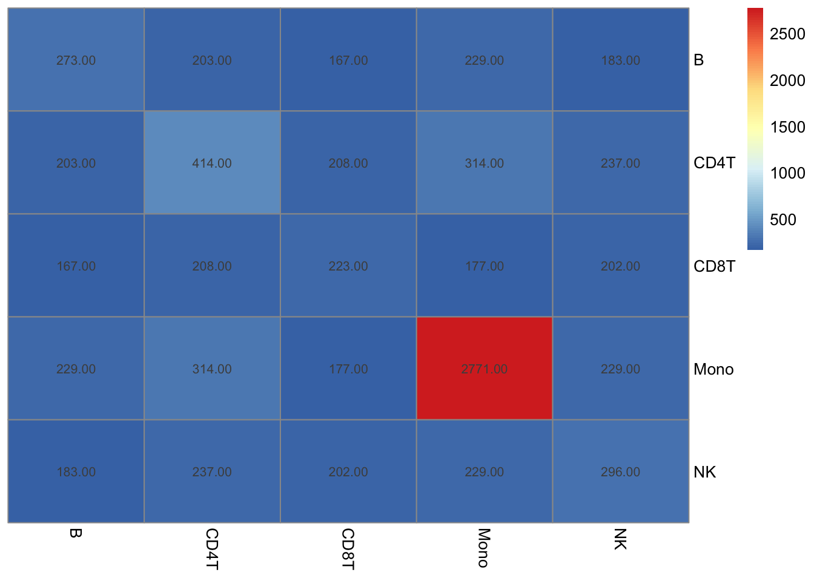

library(dplyr)
library(AnnotationDbi)
library(org.Hs.eg.db)
library(htmltools)
library(tippy)
library(reactable)
library(gseasusie)
# reticulate::use_virtualenv('gibss')
# reticulate::use_virtualenv('~/py/gibss/.venv/')
data <- new.env()
load('data/plague.RData', env=data)5 Plague
Single cell RNA-seq of PBMCs were collected at baseline and stimulated with plaugue. The effect of stimulation was estimated in each celltype using pseudobulk expression. The resutling effect sizes across cell types were restimated using MASH. Differentially expressed genes in a given cell type are identified as those with \(\text{lfsr} < 0.01\).
One thing to note is that the gene lists are quite large when using an lfsr threshold of 0.01, and the DE genes in each cell type have substantial overlap.
make_intersection_matrix <- function(list_of_lists){
# Function to calculate the size of the intersection of two lists
intersection_size <- function(a, b) {
length(intersect(a, b))
}
# Determine the number of lists
n <- length(list_of_lists)
# Create an empty matrix to store the intersection sizes
intersection_matrix <- matrix(0, n, n, dimnames = list(names(list_of_lists), names(list_of_lists)))
# Calculate the size of the intersection for each pair
for (i in seq_along(list_of_lists)) {
for (j in seq_along(list_of_lists)) {
# Fill in the matrix with intersection sizes, ensuring i <= j to avoid redundant calculations
if (i <= j) {
intersection_matrix[i, j] <- intersection_size(list_of_lists[[i]], list_of_lists[[j]])
}
}
}
# Since the intersection operation is symmetric, mirror the upper triangle to the lower triangle
intersection_matrix[lower.tri(intersection_matrix)] <- t(intersection_matrix)[lower.tri(intersection_matrix)]
return(intersection_matrix)
}5.0.1 Functions
make_cs_tbl <- gseasusie:::make_cs_tbl
make_component_tbl <- gseasusie:::make_component_tbl
get_go_info <- function(fit){
AnnotationDbi::select(GO.db::GO.db,
keys = unique(fit$data$geneSets$geneSet),
columns = c("TERM", "DEFINITION"),
keytype = "GOID") %>%
as_tibble() %>%
dplyr::mutate(geneSet = GOID)
}
get_gene_info <-function(fit){
AnnotationDbi::select(org.Hs.eg.db::org.Hs.eg.db,
keys = unique(fit$data$geneMapping$gene),
columns = c("SYMBOL", "GENETYPE", "GENENAME"),
keytype = "ENTREZID") %>%
as_tibble() %>%
dplyr::mutate(gene = ENTREZID)
}
make_cs_tbl_nested <- function(fit, logbf_threshold=log(10.)) {
more_go_info <- get_go_info(fit)
more_gene_info <- get_gene_info(fit)
gene_columns <- c("ENTREZID", "SYMBOL", "GENENAME", "geneInList")
gene_set_columns <- c("geneSet", "TERM", "DEFINITION", "alpha", "beta", "lbf", "geneSetSize", "propInList")
component_columns <- c("component", "size", "top_geneSet", "top_term", "top_effect", "lbf_ser")
all_columns <- c(component_columns, gene_set_columns, gene_columns)
message("building nested credible set table")
cs_tbl <- make_cs_tbl(fit, logbf_threshold)
component_tbl <- make_component_tbl(fit, logbf_threshold)
nested_tbl <- NULL
if(nrow(cs_tbl) > 0){
nested_tbl <- cs_tbl %>%
left_join(component_tbl) %>% # add effect estimates, etc.
left_join(more_go_info) %>%
left_join(more_gene_info) %>%
dplyr::select(tidyselect::any_of(all_columns)) %>%
# get representative gene set info
dplyr::group_by(component) %>%
mutate(
top_geneSet = geneSet[which.max(lbf)],
top_term = TERM[which.max(lbf)],
top_effect = beta[which.max(lbf)]
) %>%
ungroup() %>%
# nest gene level data
tidyr::nest(.by = c(component_columns, gene_set_columns), .key = "details") %>%
# nest gene set level data
tidyr::nest(.by = component_columns, .key = "details")
}
return(nested_tbl)
}library(reactable)
# See the ?tippy documentation to learn how to customize tooltips
with_tooltip <- function(value, tooltip, ...) {
div(style = "text-decoration: underline; text-decoration-style: dotted; cursor: help",
tippy(value, tooltip, ...))
}
make_sensible_colDef <- function(data) {
# Initialize an empty list to store colDef objects
col_defs <- list()
# Iterate over each column in the data
for (col_name in names(data)) {
# Get the column data
col_data <- data[[col_name]]
# Determine the type of the column
col_type <- class(col_data)
# Set default colDef based on the column type
if ("numeric" %in% col_type) {
# Numeric columns: Format to 2 decimal places
col_defs[[col_name]] <- colDef(format = colFormat(digits = 2))
} else if ("integer" %in% col_type) {
# Integer columns: No decimal places
col_defs[[col_name]] <- colDef(format = colFormat(digits = 0))
} else if ("character" %in% col_type || "factor" %in% col_type) {
# Character or factor columns: Truncate long strings
# col_defs[[col_name]] <- colDef(truncate = TRUE, minWidth = 150)
} else if ("Date" %in% col_type) {
# Date columns: Format as a readable date
col_defs[[col_name]] <- colDef(format = colFormat(date = TRUE))
} else if ("logical" %in% col_type) {
# Logical columns: Display as checkboxes
col_defs[[col_name]] <- colDef(cell = function(value) {
if (isTRUE(value)) "✔" else "✗"
})
} else {
# Default colDef for other types
col_defs[[col_name]] <- colDef()
}
}
return(col_defs)
}
make_rwg_column_style <- function(max=2){
function(values){
pal <- function(x) rgb(colorRamp(c('red', 'white', 'green'))(x), maxColorValue=255)
clipped <- (pmax(-max, pmin(values, max)) + max) / (2*max)
color <- pal(clipped)
list(background = color)
}
}
make_column_format_list <- function(data){
columns <- make_sensible_colDef(data)
if ('top_effect' %in% colnames(data)){
columns$top_effect <- reactable::colDef(
style= make_rwg_column_style(2),
format = reactable::colFormat(
digits=2
)
)
}
if ('beta' %in% colnames(data)){
columns$beta <- reactable::colDef(
style= make_rwg_column_style(2),
format = reactable::colFormat(
digits=2
)
)
}
if ('alpha' %in% colnames(data)){
columns$alpha <- reactable::colDef(
format = reactable::colFormat(digits=2)
)
}
if ('geneSet' %in% colnames(data)){
term2def <- purrr::map(data$DEFINITION, ~if_else(is.na(.x), "No definition found", .x))
names(term2def) <- data$geneSet
columns$geneSet <- colDef(cell = function(value) with_tooltip(value, term2def[[value]]))
}
if ('top_geneSet' %in% colnames(data)){
term2def <- purrr::map(data$DEFINITION, ~if_else(is.na(.x), "No definition found", .x))
names(term2def) <- data$GOID
columns$top_geneSet <- colDef(cell = function(value) with_tooltip(value, term2def[[value]]))
}
return(columns)
}
make_get_details <- function (nested_tbls)
{
if (!is.null(nested_tbls)) {
get_details <- function(index) {
nested_tbl <- nested_tbls[[index]]
data <- dplyr::select(nested_tbl, -tidyselect::any_of("details")) %>% head(10)
if('details' %in% colnames(nested_tbl)){
details <- nested_tbl$details
} else{
details <- NULL
}
htmltools::div(style = "padding: 1rem", reactable::reactable(
data,
details = make_get_details(details),
outlined = TRUE,
columns = make_column_format_list(data)
))
}
}
else {
get_details <- NULL
}
return(get_details)
}
nested_reactable <- function (nested_tbl)
{
if(is.null(nested_tbl)){
return(NULL)
}
data <- dplyr::select(nested_tbl, -tidyselect::any_of("details"))
details <- nested_tbl$details
reactable::reactable(
data,
details = make_get_details(details),
columns = make_column_format_list(data)
)
}5.1 DE genes (lfsr < 0.01)
5.1.1 Overview
make_list_and_background <- function(gene, lfsr){
gene_list <- gene[which(lfsr < 0.01)]
return(list(gene_list=gene_list, gene_background=gene))
}
symbol2entrez <- AnnotationDbi::select(
org.Hs.eg.db,
keys = unique(data$gene_results$gene),
columns = 'ENTREZID',
keytype = 'SYMBOL') %>%
dplyr::rename(gene = SYMBOL)
gene_lists <- data$long_results %>%
dplyr::left_join(symbol2entrez) %>%
dplyr::filter(!is.na(ENTREZID)) %>%
dplyr::group_by(celltype) %>%
dplyr::summarise(gene_list = list(make_list_and_background(ENTREZID, lfsr)))# Display the matrix
list_of_lists <- purrr::map(gene_lists$gene_list, ~.$gene_list)
names(list_of_lists) <- gene_lists$celltype
intersection_matrix <- make_intersection_matrix(list_of_lists)
pheatmap::pheatmap(intersection_matrix, cluster_rows = FALSE, cluster_cols = FALSE, display_numbers = TRUE)
5.1.2 Fitting
susie_fits <- gene_lists %>%
dplyr::rowwise() %>%
mutate(fit = list(gseasusie::fit_gsea_susie_webgestalt(
gene_list$gene_list, gene_list$gene_background,
'geneontology_Biological_Process'
)))8.516 sec elapsed
8.157 sec elapsed
11.921 sec elapsed
17.933 sec elapsed
13.189 sec elapsed5.1.3 B Cell
susie_fits$fit[[1]] %>%
gseasusie::make_cs_tbl() %>%
gseasusie::make_reactable()cs_tbl <- susie_fits$fit[[1]] %>%
gseasusie::make_cs_tbl(coverage = 0.99)
cs_tbl %>%
dplyr::group_by(component) %>%
dplyr::select(-c(log2BF_SER, DEFINITION)) %>%
gt::gt() %>%
gt::fmt_number(columns = c(propInList, log2OR, PIP, log2BF), decimals=2)| geneSet | name | size | propInList | log2OR | PIP | log2BF |
|---|---|---|---|---|---|---|
| L1 | ||||||
| GO:0006955 | immune response | 891 | 0.37 | 1.22 | 0.99 | 91.32 |
| GO:0002376 | immune system process | 1292 | 0.33 | 1.00 | 0.01 | 84.78 |
| L3 | ||||||
| GO:0034097 | response to cytokine | 524 | 0.41 | 1.08 | 0.94 | 43.40 |
| GO:0071345 | cellular response to cytokine stimulus | 483 | 0.41 | 1.07 | 0.05 | 39.10 |
| GO:0070887 | cellular response to chemical stimulus | 1309 | 0.30 | 0.68 | 0.00 | 35.41 |
5.1.4 CD4T Cell
susie_fits$fit[[2]] %>%
gseasusie::make_cs_tbl() %>%
gseasusie::make_reactable()5.1.5 CD8T Cell
susie_fits$fit[[3]] %>%
gseasusie::make_cs_tbl() %>%
gseasusie::make_reactable()5.1.6 Mono
susie_fits$fit[[4]] %>%
gseasusie::make_cs_tbl() %>%
gseasusie::make_reactable()5.1.7 NK
susie_fits$fit[[5]] %>%
gseasusie::make_cs_tbl() %>%
gseasusie::make_reactable()5.1.8 Residual enrichments
While logistic SuSiE may not confidently include a gene set in a CS, there may be evidence for residual enrichment signal after controlling for the effects estimated by SuSiE. That is, we may find examples where there is evidence for a an enrichment (the residual SER has a moderately large BF) but it is difficult to localize to a particular gene set (the CS is very large).
One idea is to perform a marginal analysis of the residual enrichment signal. For each gene set, test for an effect controlling for those discovered in logistic SuSiE. We can apply BH to \(p_i = 1/\text{BF}_i\) where \(\text{BF}_i\) is the Bayes factor for the enrichment of gene set \(i\) controlling for the gene sets discovered in logistic SuSiE. Notice that
\[ \text{BF}_{SER} = \frac{1}{p} \sum_{i=1}^p BF_i \leq \frac{\text{BF}_{(1)}}{p} \] Then, if \(\text{BF}_{SER} > \frac{1}{\alpha}\), applying BH procedure to \(p_i = 1/\text{BH_i}\) would give at least one gene set at FDR level \(\alpha\). For \(\alpha = 0.1\) this corresponds to seeing a \(\log BF \approx 2.3\). Here, we present all CSs for components with \(\text{BF}_{SER} \geq 10\). All the CSs are small, so in this example there isn’t evidence for strong marginal enrichment.
purrr::map_dbl(1:5, ~sum(p.adjust(1/exp(susie_fits$fit[[.x]]$fit$lbf[10,]), method='BH')< 0.05))[1] 0 0 0 0 05.2 DE genes (lfsr < 0.01, log2FC > 0.5)
5.2.1 Overview
make_list_and_background <- function(gene, lfsr, beta){
gene_list <- gene[intersect(which(lfsr < 0.01), which(abs(beta) > 0.5))]
return(list(gene_list=gene_list, gene_background=gene))
}
symbol2entrez <- AnnotationDbi::select(
org.Hs.eg.db,
keys = unique(data$gene_results$gene),
columns = 'ENTREZID',
keytype = 'SYMBOL') %>%
dplyr::rename(gene = SYMBOL)
gene_lists <- data$long_results %>%
dplyr::left_join(symbol2entrez) %>%
dplyr::filter(!is.na(ENTREZID)) %>%
dplyr::group_by(celltype) %>%
dplyr::summarise(gene_list = list(make_list_and_background(ENTREZID, lfsr, beta)))# Display the matrix
list_of_lists <- purrr::map(gene_lists$gene_list, ~.$gene_list)
names(list_of_lists) <- gene_lists$celltype
intersection_matrix <- make_intersection_matrix(list_of_lists)
pheatmap::pheatmap(intersection_matrix, cluster_rows = FALSE, cluster_cols = FALSE, display_numbers = TRUE)
5.2.2 Fitting
susie_fits <- gene_lists %>%
dplyr::rowwise() %>%
mutate(fit = list(gseasusie::fit_gsea_susie_webgestalt(
gene_list$gene_list, gene_list$gene_background,
'geneontology_Biological_Process'
)))18.015 sec elapsed
11.357 sec elapsed
14.121 sec elapsed
8.752 sec elapsed
10.563 sec elapsed5.2.3 B Cell
susie_fits$fit[[1]] %>%
gseasusie::make_cs_tbl() %>%
gseasusie::make_reactable()5.2.4 CD4T Cell
susie_fits$fit[[2]] %>%
gseasusie::make_cs_tbl() %>%
gseasusie::make_reactable()5.2.5 CD8T Cell
susie_fits$fit[[3]] %>%
gseasusie::make_cs_tbl() %>%
gseasusie::make_reactable()5.2.6 Mono
susie_fits$fit[[4]] %>%
gseasusie::make_cs_tbl() %>%
gseasusie::make_reactable()5.2.7 NK
susie_fits$fit[[5]] %>%
gseasusie::make_cs_tbl() %>%
gseasusie::make_reactable()5.2.8 Residual Enrichment
purrr::map_dbl(1:5, ~sum(p.adjust(1/exp(susie_fits$fit[[.x]]$fit$lbf[10,]), method='BH')< 0.05))[1] 0 0 0 0 05.3 DE genes (lfsr < 0.01, log2FC > 0.5, upregulated)
5.3.1 Overview
make_list_and_background <- function(gene, lfsr, beta){
gene_list <- gene[intersect(which(lfsr < 0.01), which(beta > 0.5))]
return(list(gene_list=gene_list, gene_background=gene))
}
symbol2entrez <- AnnotationDbi::select(
org.Hs.eg.db,
keys = unique(data$gene_results$gene),
columns = 'ENTREZID',
keytype = 'SYMBOL') %>%
dplyr::rename(gene = SYMBOL)
gene_lists <- data$long_results %>%
dplyr::left_join(symbol2entrez) %>%
dplyr::filter(!is.na(ENTREZID)) %>%
dplyr::group_by(celltype) %>%
dplyr::summarise(gene_list = list(make_list_and_background(ENTREZID, lfsr, beta)))# Display the matrix
list_of_lists <- purrr::map(gene_lists$gene_list, ~.$gene_list)
names(list_of_lists) <- gene_lists$celltype
intersection_matrix <- make_intersection_matrix(list_of_lists)
pheatmap::pheatmap(intersection_matrix, cluster_rows = FALSE, cluster_cols = FALSE, display_numbers = TRUE)5.3.2 Fitting
susie_fits <- gene_lists %>%
dplyr::rowwise() %>%
mutate(fit = list(gseasusie::fit_gsea_susie_webgestalt(
gene_list$gene_list, gene_list$gene_background,
'geneontology_Biological_Process'
)))8.59 sec elapsed
12.306 sec elapsed
9.439 sec elapsed
10.195 sec elapsed
10.55 sec elapsed5.3.3 B Cell
susie_fits$fit[[1]] %>%
gseasusie::make_cs_tbl() %>%
gseasusie::make_reactable()5.3.4 CD4T Cell
susie_fits$fit[[2]] %>%
gseasusie::make_cs_tbl() %>%
gseasusie::make_reactable()5.3.5 CD8T Cell
susie_fits$fit[[3]] %>%
gseasusie::make_cs_tbl() %>%
gseasusie::make_reactable()5.3.6 Mono
susie_fits$fit[[4]] %>%
gseasusie::make_cs_tbl() %>%
gseasusie::make_reactable()5.3.7 NK
susie_fits$fit[[5]] %>%
gseasusie::make_cs_tbl() %>%
gseasusie::make_reactable()5.3.8 Residual Enrichment
purrr::map_dbl(1:5, ~sum(p.adjust(1/exp(susie_fits$fit[[.x]]$fit$lbf[10,]), method='BH')< 0.05))[1] 0 0 0 0 05.4 DE genes (lfsr < 0.01, log2FC < -0.5, down regulated)
5.4.1 Overview
make_list_and_background <- function(gene, lfsr, beta){
gene_list <- gene[intersect(which(lfsr < 0.01), which(beta < -0.5))]
return(list(gene_list=gene_list, gene_background=gene))
}
symbol2entrez <- AnnotationDbi::select(
org.Hs.eg.db,
keys = unique(data$gene_results$gene),
columns = 'ENTREZID',
keytype = 'SYMBOL') %>%
dplyr::rename(gene = SYMBOL)
gene_lists <- data$long_results %>%
dplyr::left_join(symbol2entrez) %>%
dplyr::filter(!is.na(ENTREZID)) %>%
dplyr::group_by(celltype) %>%
dplyr::summarise(gene_list = list(make_list_and_background(ENTREZID, lfsr, beta)))# Display the matrix
list_of_lists <- purrr::map(gene_lists$gene_list, ~.$gene_list)
names(list_of_lists) <- gene_lists$celltype
intersection_matrix <- make_intersection_matrix(list_of_lists)
pheatmap::pheatmap(intersection_matrix, cluster_rows = FALSE, cluster_cols = FALSE, display_numbers = TRUE)5.4.2 Fitting
susie_fits <- gene_lists %>%
dplyr::rowwise() %>%
mutate(fit = list(gseasusie::fit_gsea_susie_webgestalt(
gene_list$gene_list, gene_list$gene_background,
'geneontology_Biological_Process'
)))13.198 sec elapsed
7.404 sec elapsed
4.699 sec elapsed
7.36 sec elapsed
6.328 sec elapsed5.4.3 B Cell
susie_fits$fit[[1]] %>%
gseasusie::make_cs_tbl() %>%
gseasusie::make_reactable()5.4.4 CD4T Cell
susie_fits$fit[[2]] %>%
gseasusie::make_cs_tbl() %>%
gseasusie::make_reactable()NULL5.4.5 CD8T Cell
susie_fits$fit[[3]] %>%
gseasusie::make_cs_tbl() %>%
gseasusie::make_reactable()NULL5.4.6 Mono
susie_fits$fit[[4]] %>%
gseasusie::make_cs_tbl() %>%
gseasusie::make_reactable()5.4.7 NK
susie_fits$fit[[5]] %>%
gseasusie::make_cs_tbl() %>%
gseasusie::make_reactable()NULL5.4.8 Residual Enrichment
purrr::map_dbl(1:5, ~sum(p.adjust(1/exp(susie_fits$fit[[.x]]$fit$lbf[10,]), method='BH')< 0.05))[1] 0 0 0 0 05.5 Unique DE genes (lfsr < 0.01)
5.5.1 Overview
CD4 T-Cells ane mononucleocytes have a large number of unique DE genes, but B, CD8T, and NK cells have very few. Consequently, logistic SuSiE only reports enrichment in the prior two cell types.
# Function to find unique elements in a list compared to others
find_unique_elements <- function(target_list, other_lists) {
# Combine all other lists into a single vector
combined_others <- unlist(other_lists)
# Find elements in the target list that are not in the combined vector of other lists
setdiff(target_list, combined_others)
}
# Create a new list to store lists of unique elements
unique_elements_list <- lapply(seq_along(gene_lists$gene_list), function(i) {
# Current target list
target_list <- list_of_lists[[i]]
# All other lists except the current one
other_lists <- list_of_lists[-i]
# Find unique elements for the current list
find_unique_elements(target_list, other_lists)
})
# Display the matrix
list_of_lists <- unique_elements_list
names(list_of_lists) <- gene_lists$celltype
intersection_matrix <- make_intersection_matrix(list_of_lists)
pheatmap::pheatmap(intersection_matrix, cluster_rows = FALSE, cluster_cols = FALSE, display_numbers = TRUE)
5.5.2 Fitting
# Assign names to the resulting list of lists
# names(unique_elements_list) <- names(list_of_lists)
unique_susie_fits <- gene_lists %>%
mutate(unique_list = unique_elements_list) %>%
dplyr::rowwise() %>%
mutate(fit = list(gseasusie::fit_gsea_susie_webgestalt(
unique_list, gene_list$gene_background,
'geneontology_Biological_Process'
))) %>%
ungroup()4.387 sec elapsed
8.057 sec elapsed
5.302 sec elapsed
7.647 sec elapsed
4.661 sec elapsed5.5.3 B Cell
susie_fits$fit[[1]] %>%
gseasusie::make_cs_tbl() %>%
gseasusie::make_reactable()5.5.4 CD4T Cell
susie_fits$fit[[2]] %>%
gseasusie::make_cs_tbl() %>%
gseasusie::make_reactable()NULL5.5.5 CD8T Cell
susie_fits$fit[[3]] %>%
gseasusie::make_cs_tbl() %>%
gseasusie::make_reactable()NULL5.5.6 Mono
susie_fits$fit[[4]] %>%
gseasusie::make_cs_tbl() %>%
gseasusie::make_reactable()5.5.7 NK
susie_fits$fit[[5]] %>%
gseasusie::make_cs_tbl() %>%
gseasusie::make_reactable()NULL5.5.8 Residual Enrichment
purrr::map_dbl(1:5, ~sum(p.adjust(1/exp(susie_fits$fit[[.x]]$fit$lbf[10,]), method='BH')< 0.05))[1] 0 0 0 0 0